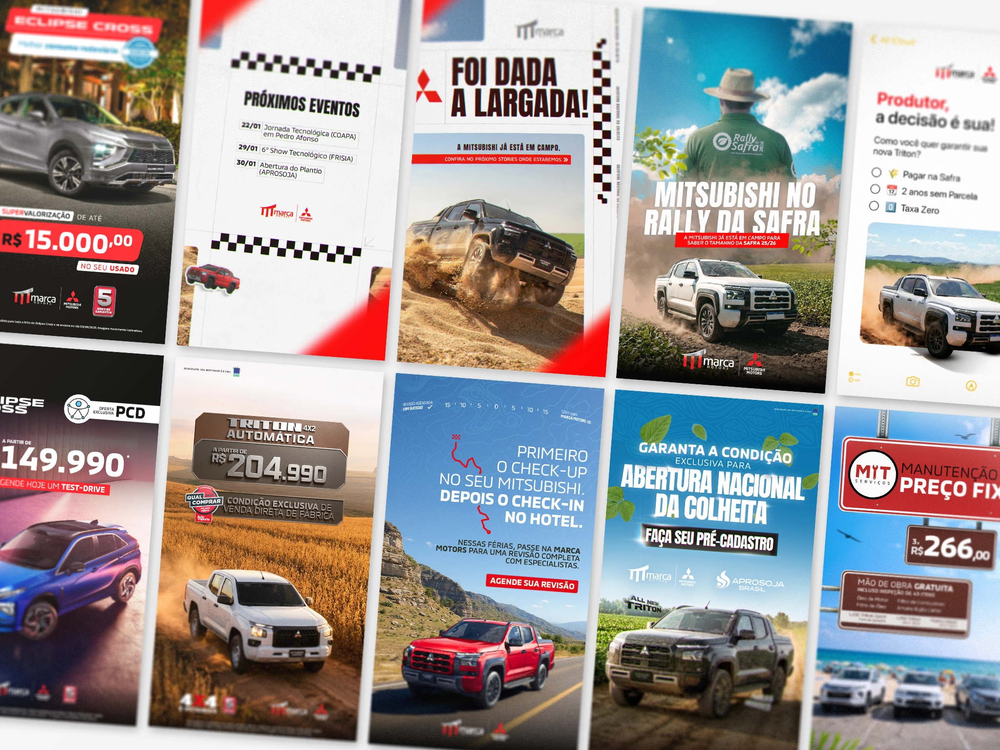

Creating monthly promotional campaigns for Mitsubishi vehicles
Marca Motors Mitsubishi
Developing a new department at the largest dealership in north of Brasil, while supporting the marketing campaings.
Overview
Design as way of thinking
For more than two years I collaborated with Marca Motors Mitsubishi, a dealership with strong influence in Northern Brazil, particularly in regions closely connected to the agrobusiness sector.
My work covered a broad spectrum of design activities — from high-volume marketing campaigns and social media content to print materials and internal communication. Beyond producing visuals, I also helped introduce design thinking into operational processes, connecting design with departments like CRM, sales, IT, and accounting.
Unlike many of my other projects where I led the entire creative direction, this experience required me to work inside a fast-paced marketing team, adapting to multiple stakeholders, short deadlines, and hierarchical decision-making.
This project became less about individual visual authorship and more about design as a collaborative business tool.

Context
A different breed
Marca Motors operates in a region where agrobusiness plays a central economic role. While the manufacturer’s national marketing strategies divide their focus between urban and rural audiences, the dealership developed a strong positioning by deepening its relationship with agricultural entrepreneurs and workers.
This meant that communication often needed to balance:
Factory brand guidelines
Regional audience characteristics
Local campaign opportunities
My Role
Challenges i needed to solve.
I joined the company in 2023 as a full-time graphic designer, taking over responsibilities from a previous designer.
My main focus was to support the marketing team in producing a high volume of content for both digital and print channels, while also helping to establish a more strategic design process within the organization.
The dealership was gradually moving away from third-party agencies, so my role was to internalize much of the design production, working closely with the internal marketing team.
My responsibilities included:
Producing high-impact visuals for social media
Developing motion graphics for digital campaigns
Designing used car promotion materials
Creating endomarketing assets for sales teams
Producing print materials such as outdoors and event graphics
The pace was fast — campaigns often required rapid production and multiple iterations.
Working in this environment strengthened my ability to prioritize clarity and speed without losing visual coherence.
Design Approach
Expanding Design Concept
During quieter moments between campaigns, I explored opportunities to connect design with other departments.
This led to collaborations with:
- CRM
- IT
- Accounting
- Sales teams
One of the most interesting developments happened with the CRM department.
Previously, many customer communications were text-heavy messages. Together with the CRM manager and IT team, we began introducing visual communication elements such as:
- Personalized vehicle maintenance reminders
- Promotional key visuals sent to targeted customers
- Digital vouchers
- Automated communication templates
These initiatives helped transform routine communication into more engaging customer touchpoints.
This collaboration reinforced a belief I carry across projects:
Design is not only about the one day where we do the visual but more it’s a way of thinking during the whole campaign process.
Influence
Building Design Infrastructure
When my full-time contract ended and I transitioned to freelance collaboration, I wanted to leave the team with a structure that could sustain the design work internally.
I created a comprehensive Notion documentation system, including:
- File management and naming conventions
- Image retouching workflows for vehicle photography
- Standard sizes for recurring marketing materials
- Internal best practices for campaign production
The goal was to help the team maintain consistency and efficiency, even as designers changed over time.
Reflection
What I learned.
Working with Marca Motors Mitsubishi was a valuable experience in team-based design environments. It reinforced that strong design practice is not only about creative control but also about understanding business contexts, collaborating across departments, and building systems that outlast individual projects.
The legacy I aimed to leave was not just a set of visuals, but the first step toward a design culture inside the organization.